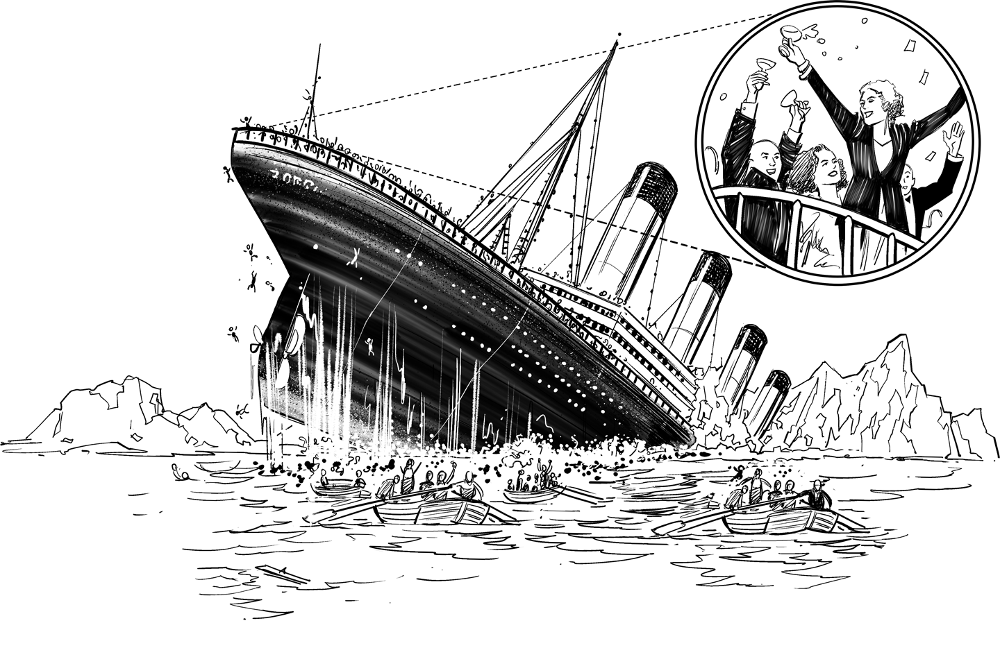

Giving Folks the Red Pill

Embarking on a transformation journey can be quite a dramatic, sometimes even traumatic, undertaking for many people working for traditional enterprises. Digital companies are run, or at least perceived to be run, by highly educated, 20-something digital natives who aren’t distracted by family or social life and require little to no sleep. Their employers have hardly any legacy to deal with and billions in the bank, despite offering most services to consumers for free. For IT staff who have been working in the same, traditional enterprise, following the same processes for decades, this is likely to cause a mix of fear, denial, and resentment.
Getting these folks on board for a transformation agenda is thus a delicate affair: if you are too gentle, people may not see a need to change. If you are too direct, people may panic or resent you.
Extorting a final reference from the movie The Matrix, when Morpheus asks Neo to choose between the red pill, which will eject him into reality, and the blue pill, which will keep him inside the illusion of the Matrix, he doesn’t describe what “reality” looks like. Morpheus merely states:
Remember: all I’m offering is the truth. Nothing more.
If he had told Neo that the truth translates into living in the confines of a bare-bones hovercraft ship patrolling sewers in the middle of a war against the machines who perpetually hunt the ship to chop it up with their powerful laser beams, he may have taken the blue pill. But Neo had already understood that there’s something wrong with the current state, the Matrix illusion, and felt a strong desire to change the system. And while you also sense that something’s not quite right with the existing system, most of your corporate peers will be quite content with their current environment and position. Sadly it’s not enough if you take the pill yourself, so you need to push them a little bit to come along for the ride.
Just like in the movie The Matrix, though, the new digital reality that awaits the red-pill-taking folks may not be exactly what they expected.
In a meeting, a fellow architect once proudly proclaimed that for transformation to succeed the architect’s life needs to be made easier. He was bound to be disappointed.
Aiming to make one’s life easier is unlikely to lead into the digital future but will rather end up in disappointment. Technological advances and new ways of working make IT more interesting and valuable to the business, but they don’t make it easier: new technologies must be learned, and the environment generally becomes more complex, all while the pace speeds up. Digital transformation isn’t a matter of convenience, but of corporate survival.
Looking from the outside, working at digital companies appears to largely consist of free lunches, massages, and riding Segways. While digital companies do court their employees with an unheard-of list of perks, they are also hugely competitive internally and externally. They firmly embrace a culture of constant change and speed to remain competitive and drive innovation. This means that employees rarely get to rest on the laurels of their work but need to keep pushing on. Engineers don’t join digital companies to relax but to push the envelope, innovate, and change the world.
The rewards match the challenge, though, not just financially, but, most important, in enabling engineers to really make a difference and accomplish things they wouldn’t be able to accomplish on their own. More than a decade ago at Google, you could scale an application you wrote to 100,000 servers and run analytics against petabytes of logs in a second or two. Most traditional companies still dream of these capabilities a decade later. Such are the rewards of the digital IT life. These examples also show traditional companies why they should be scared.
When looking to transform, traditional companies often identify practices employed by digital disruptors and try to import them into their traditional way of working. While it’s important to understand how your competitors think and work, adopting their practices requires careful consideration. Digital companies are known to do things like storing all their source code in a single repository, not having any architects, or letting employees work on whatever they like. When admiring these techniques, traditional companies must realize that they are watching world-class superstars pulling off amazing stunts. Yes, there are people who walk a tightrope between skyscrapers or jump off a tower to glide into the rooftop pool of a nearby building. This doesn’t mean you should try the same at home.
When adopting “digital” practices, an organization must understand the interdependencies between these practices. A single code repository requires a world-class build system that can scale to thousands of machines and execute incremental build and test cycles. Sticking all your code into a single repository without having such a system in place, and a team to maintain it, is like jumping off a building without a parachute. It’s unlikely you’ll be landing softly in the nearby rooftop pool.
For most organizations, sailing to the digital future is a matter of survival. Imagine that you are an officer on the Titanic ocean liner and were just informed that the ship will be slowly but surely sinking. Most of the passengers are completely unaware of the severity of the situation and are comfortably sipping champagne on the upper decks. If you walk up to the passengers and individually inform them:
Sir, excuse me if you wouldn’t mind. Could you be so kind as to consider relocating to the main deck so we may transfer you to a safer vessel? After you finish your drink, obviously. Please kindly excuse the terrible inconvenience. Your well-being is our primary concern.
You may not get much of a response, maybe just a doubtful stare. People may order another champagne and then have a peek at the vessel you are suggesting, the lifeboat, just to conclude that it appears much less safe and convenient than staying on the world’s most modern and unsinkable ocean liner.
On the other hand, if you speak to the passengers as follows:
This ship is sinking! Most of you will drown in the icy ocean because there aren’t enough lifeboats.
you will cause widespread panic and a rush for the lifeboats that’s likely to leave many passengers dead or injured before the ship even takes on water.
Motivating corporate IT staff to start changing the way they work, and to leave behind the comfort of their current position is not dissimilar. They are also unlikely to realize their ship is sinking. Where on the spectrum of communication methods you should land depends on each organization and individual. I tend to start gentle and “ratchet up” the rhetoric when I observe perpetual inaction.
Just as it seems unlikely that a simple block of ice can sink a modern (at the time) marvel of engineering, small, digital companies may not appear threatening to a traditional enterprise. Many startups are run by relatively inexperienced, sometimes even naive, people who believe they can revolutionize an industry while sitting on a beanbag because their office space hasn’t been fully set up yet. They are often understaffed and need to secure multiple rounds of external funding before turning profitable, if ever.
However, just like 90% of an iceberg’s volume lies under water, digital companies’ enormous strength is hidden: it lies in their ability to learn much faster, often orders of magnitude faster than traditional organizations. Dismissing or trivializing startups’ initial attempts to enter an established market could therefore be a fatal mistake. “They don’t understand our business” is a common observation from traditional businesses. However, what took a business 50 years to learn may take a disruptor only one year or less because it is set up for economies of speed (Chapter 35) and has amazing technology at its disposal.
Digital disruptors also don’t have to unlearn bad habits. Learning new things is difficult, but unlearning existing processes, thought patterns, and assumptions is disproportionately more difficult. Unlearning and abandoning what made them successful in the past is one of the biggest transformation hurdles for traditional companies (Chapter 26).
Some traditional businesses may feel safe from disruption because their industry is regulated. To demonstrate how thin a safety net regulation provides, I routinely remind business leaders that if the digitals have managed to put electric and self-driving cars on the road and rockets into space, they are surely capable of obtaining a banking or insurance license. For example, they could simply acquire a licensed company. The fintechs Lemonade (insurance) and N26 (banking) are vivid examples of successful challengers in a regulated industry.
Digital companies are not out to replicate existing business models. Rather, they choose weak spots that are highly inefficient or cause unhappy customers.
Lastly, digital disruptors don’t tend to attack from the front. They tend to choose weak spots in existing business models that are highly inefficient, but not significant enough for large, traditional enterprises to pay attention to. Airbnb didn’t build a better hotel, and fintech companies aren’t interested in rebuilding a complete bank or insurance company. Rather, they attack the distribution channels, where inefficiency, high commissions, and unhappy customers allow new business models to scale rapidly with minimum capital investment. Some researchers claim that had the Titanic hit the iceberg head on, it might not have sunk. Instead, it was taken down because the iceberg tore open a large portion of the relatively weak side of the hull. That’s where the digitals hit.
While transformation can be a scary endeavor, you aren’t the only architect who is accepting the challenge. Just like ships in distress, it’s good to call for help when things look dire. You shouldn’t be shy about sending a digital SOS—no one has a proven recipe for transformation, so exchanging experiences and anecdotes with your peers is highly beneficial. You may even opt to share your experiences in a book. I’ll be one of your first readers.